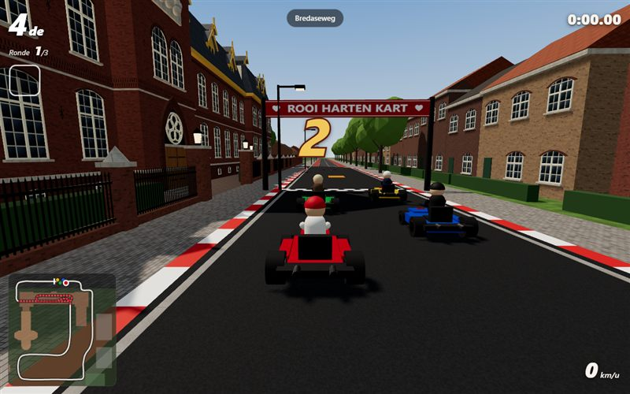
Rooi Harten Kart
Kartrace door en rond het Missiehuis in Tilburg.
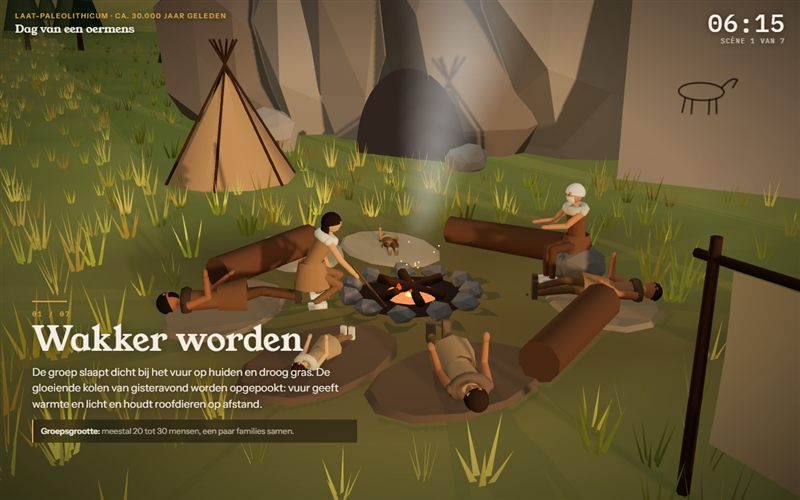
Dag van een oermens
Een dag uit het leven van een prehistorisch mens.
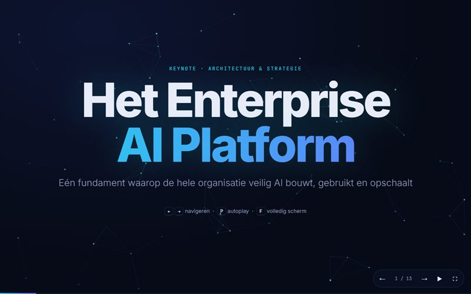
Enterprise AI Platform
Presentatie over een enterprise AI-platform.
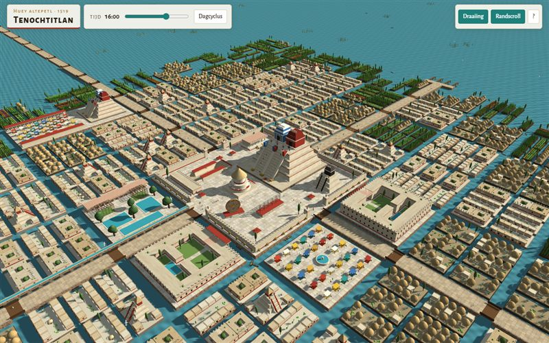
Tenochtitlan
De Azteekse hoofdstad in 1519, in 3D.
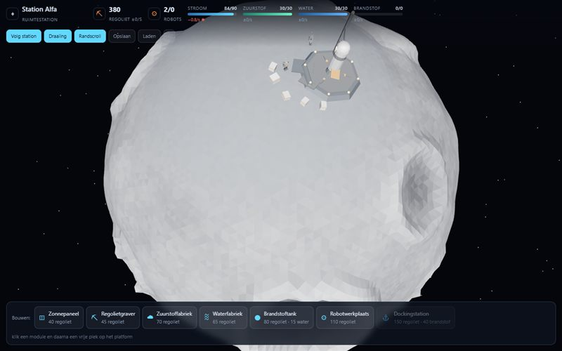
Maanbasis
Geen geld, alleen steen: bouw met robots een basis op de maan.
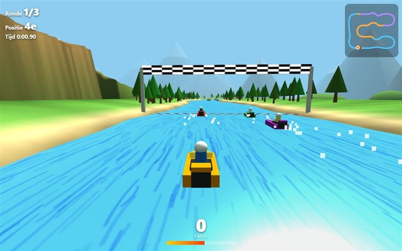
Kloofracer
Race met een jetboot door een bergkloof.
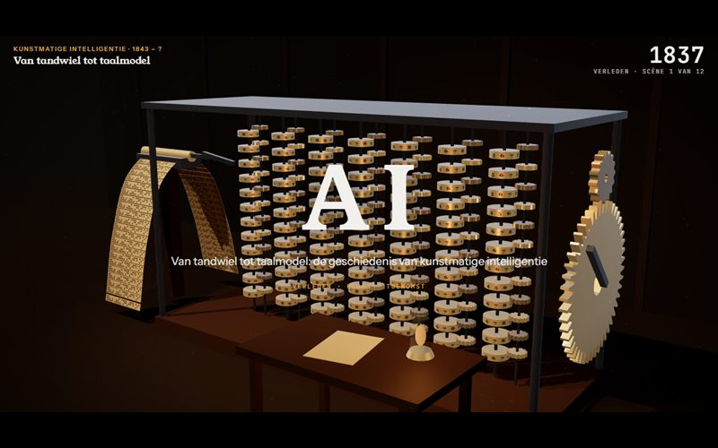
Geschiedenis van AI
Van tandwiel tot taalmodel.
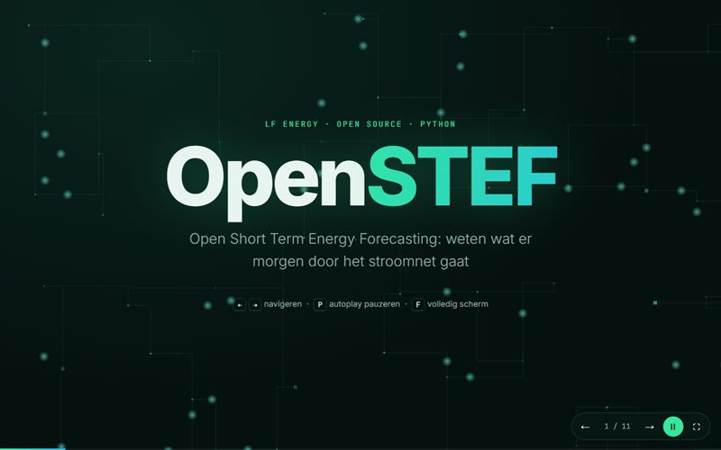
OpenSTEF
Presentatie over OpenSTEF.
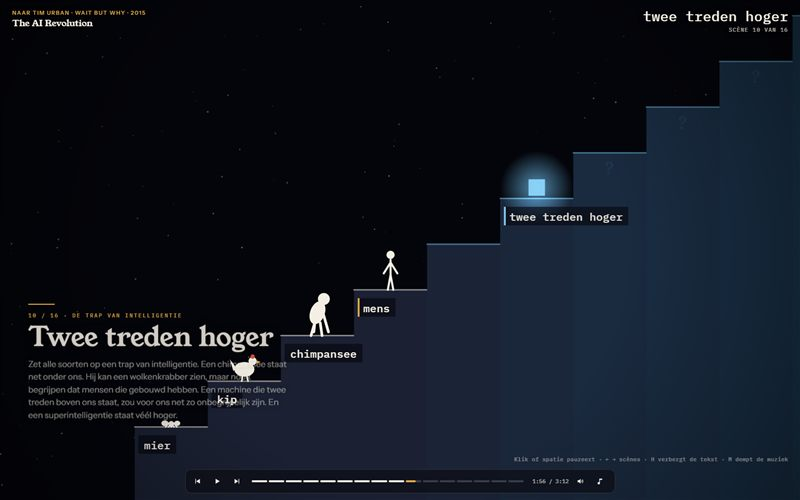
The AI Revolution
Geanimeerde samenvatting van het Wait But Why-artikel over superintelligentie.
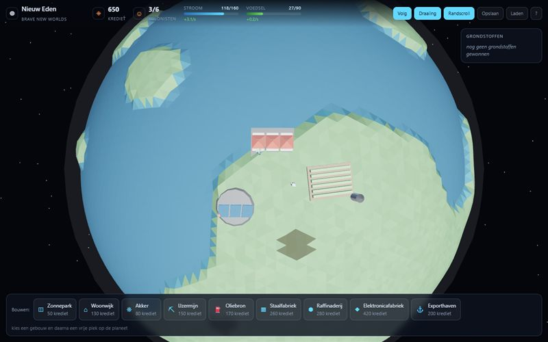
Brave New Worlds
Kolonisatie van een nieuwe planeet.
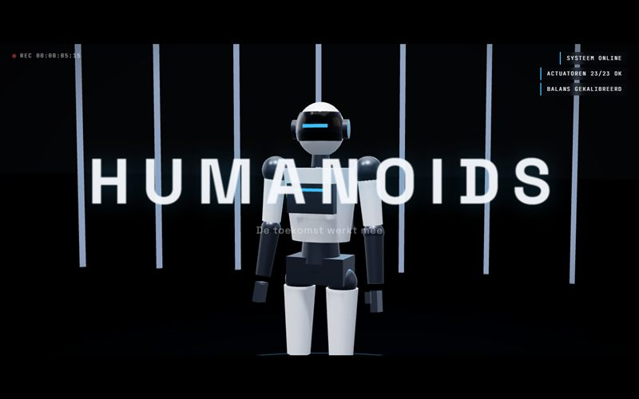
Humanoids Showreel
Humanoïde robots in verschillende scènes.
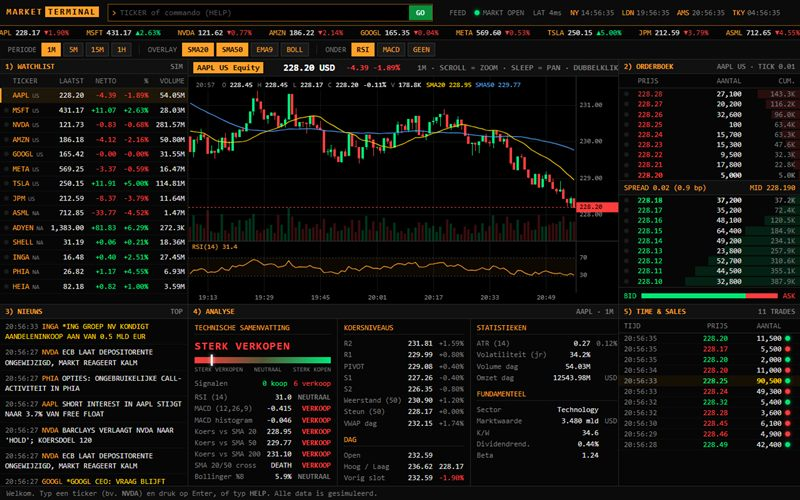
Market Terminal
Gesimuleerde beursterminal in Bloomberg-stijl.
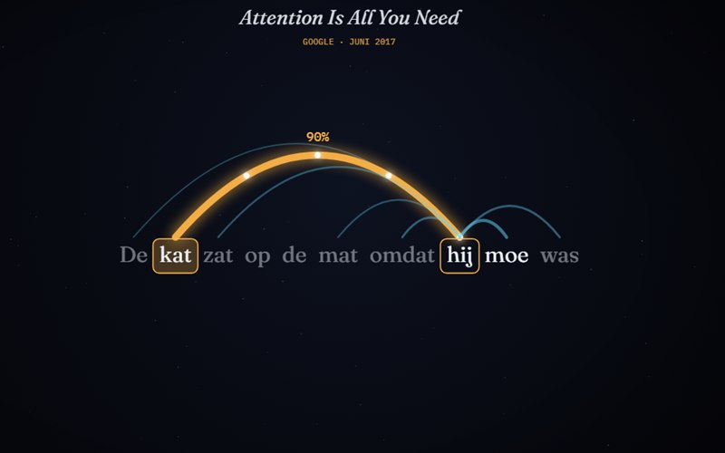
Hoe computers leerden praten
De geschiedenis van taalmodellen: van de transformer tot AI-wiskunde en de Hugging Face-hack.
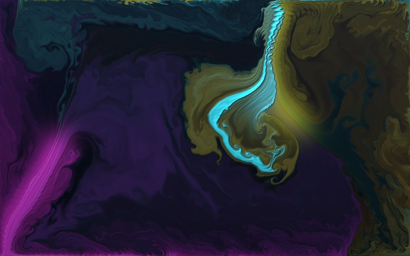
Inktkunst
Realtime vloeistofsimulatie: inkt, marmer en olie die wervelt.
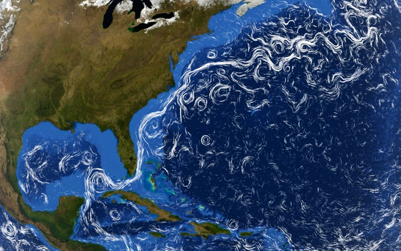
Oceaanstromen
De echte oppervlaktestroming van alle oceanen, als lichtsporen over de aarde.
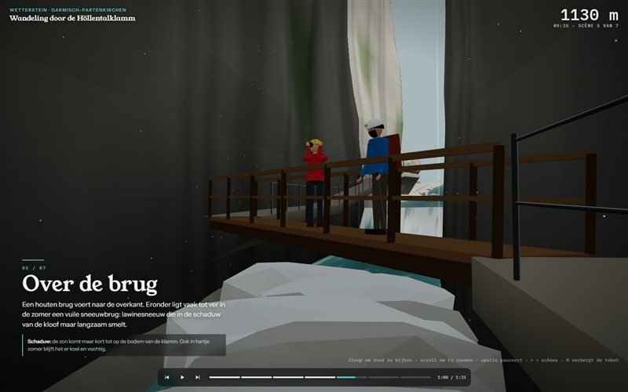
Höllentalklamm
Een wandeling door de Höllentalklamm, van Hammersbach tot de Höllentalangerhütte.